W1263 · 需求反思与方案裁决材料 · 实测对照
现役「宣纸刻本」 vs v3「中性骨架 + 浓彩原文层」
左边是 16 小时前 W1261 刚落地的现役站点，右边是 12 小时前 W1262 产出、今天从 gitignore 区抢救回来的 v3 方向。两边都是本机 Playwright 实拍（file:// 双击形态），不是示意图。
一、首页（落地页）
现役：宣纸暖底 + 朱砂强调 + 毛笔插画主视觉。v3：中性冷灰素墙 + 唯一朱砂强调 + 百回坛城（签名元素）。
现役 · 宣纸刻本W1261
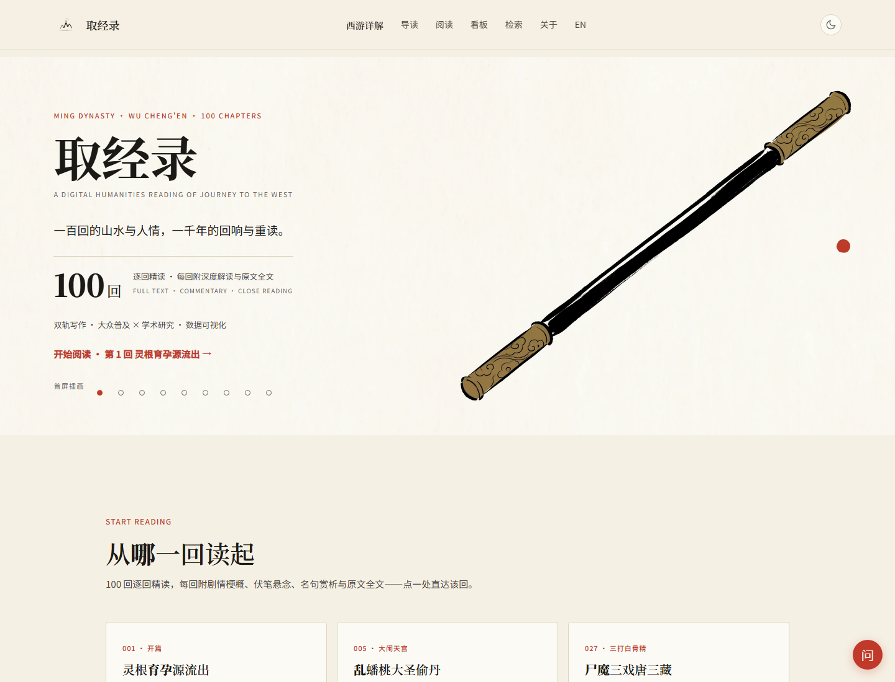
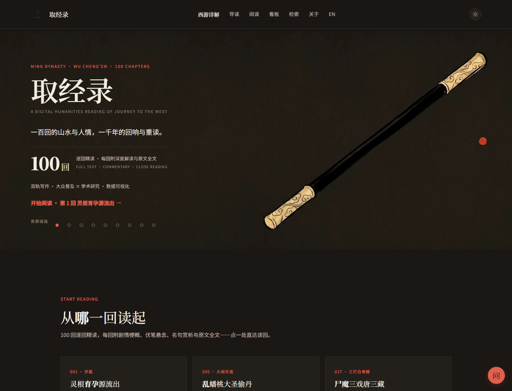
v3 · 中性骨架 + 浓彩原文层W1262 抢救
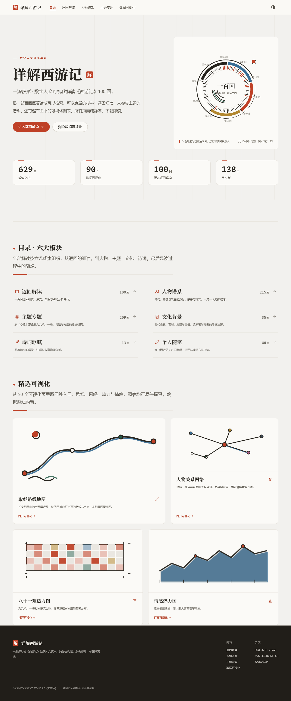
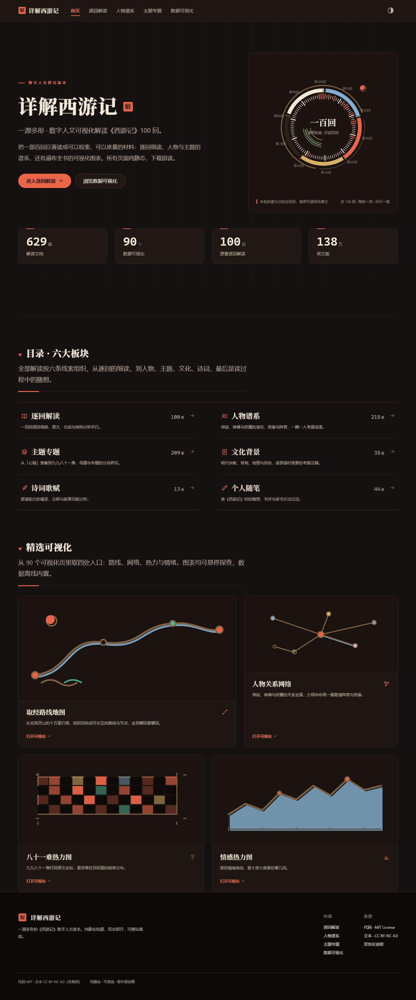
二、长文阅读页（reader 族 = 站点 73%）
现役 reader 族在 v3 原设计中完全空白——本页为 W1263 新补的第三族样板。
现役 · readerW1261
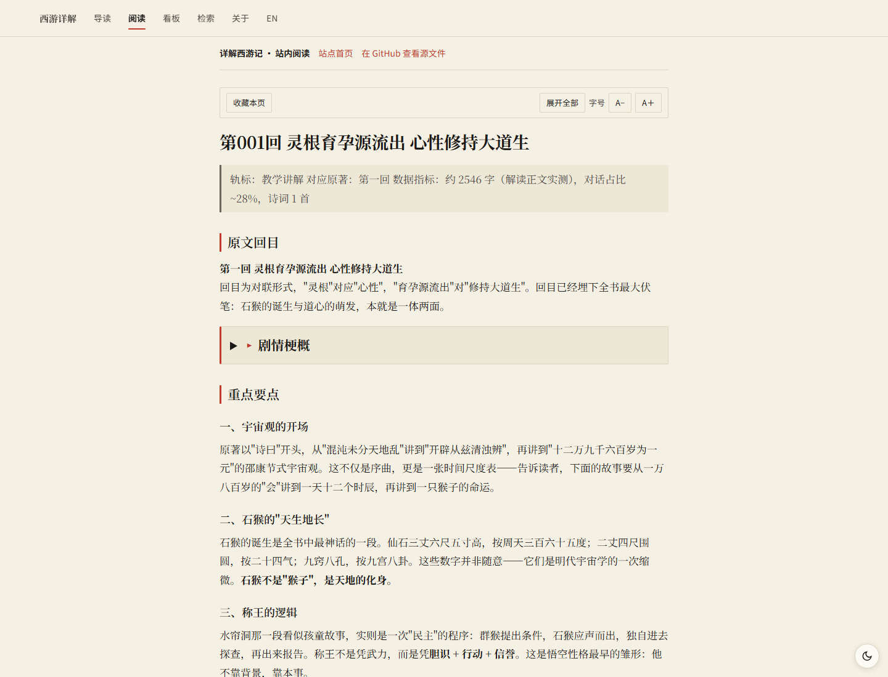
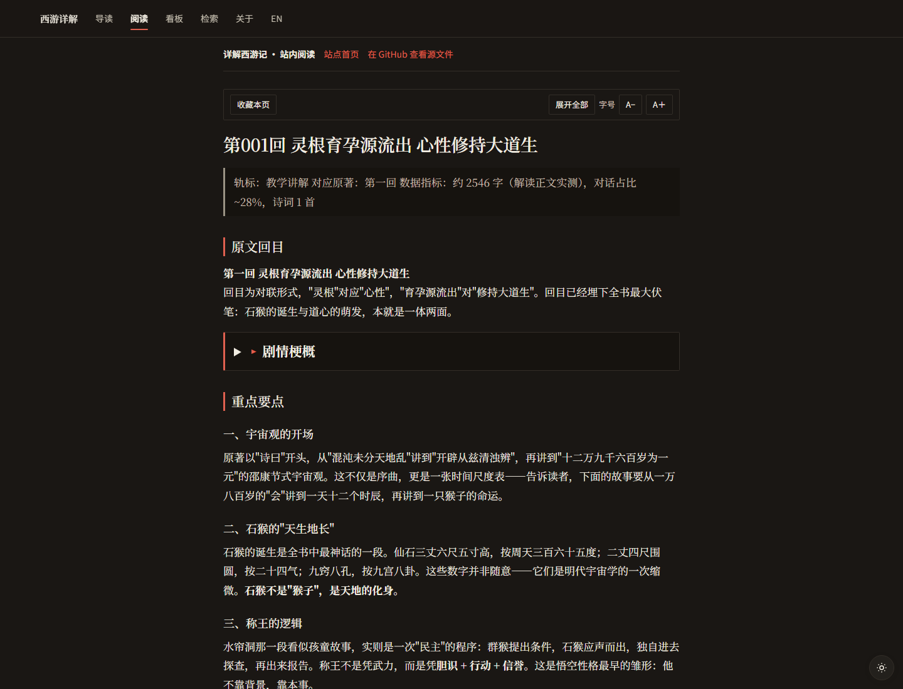
v3 · reader（本批新增）W1263
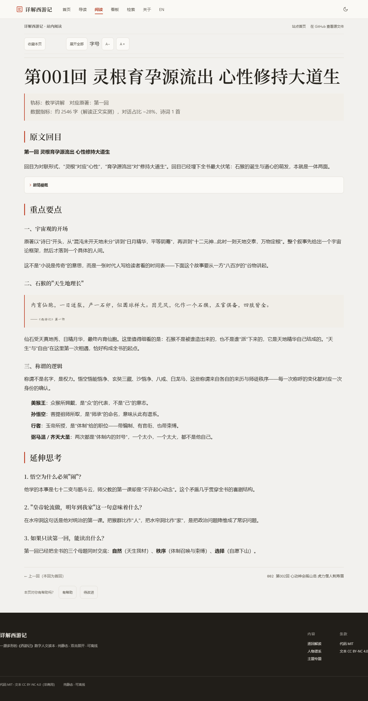
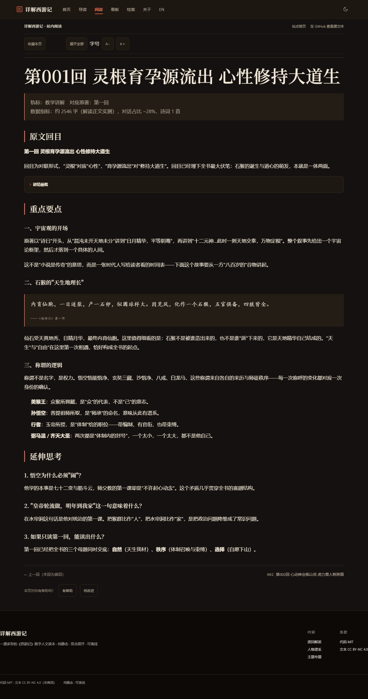
三、数据可视化页（data 族）
现役 data 页的 KPI 区已是新语言，但 hero 区仍是旧深色水墨素材带——同页新旧两套设计语言并存，这正是"拼贴感"的来源。
现役 · dataW1261

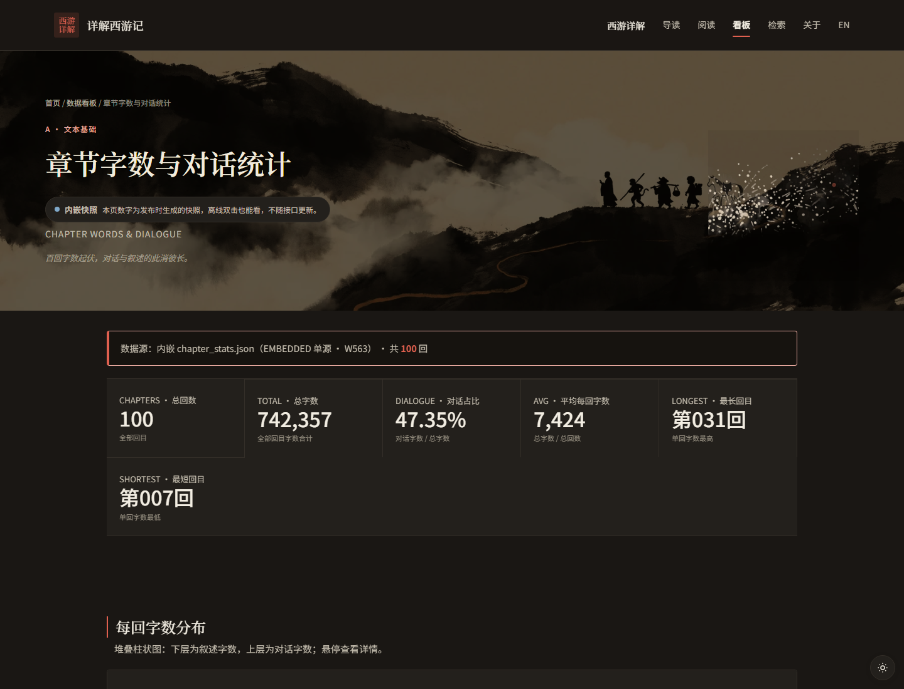
v3 · datavizW1262 抢救
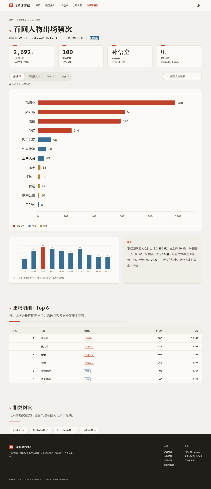
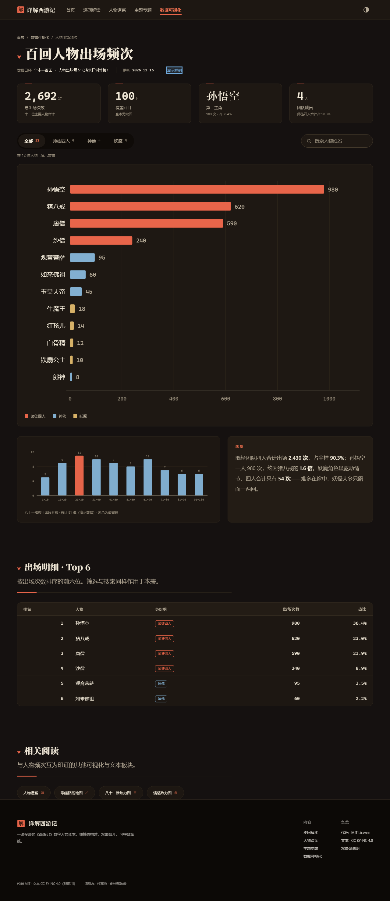
四、现役站点的实测基线（本会话实读）
| 项 | 实测值 | 含义 |
|---|---|---|
| 内联 CSS 总量 | 61.87 MB / 1,970 块 | 875 页的样式总沉淀 |
| 共享层（tokens+system）占比 | 92.0%（56.90 MB） | 样式高度集中 ⇒ 换 token 即可全局换肤，不必"舍弃一切" |
| 页面私有样式占比 | 8.0%（4.97 MB） | 裸 hex 283,556 个中私有块内仅 374 个（0.1%） |
| 实际使用 class 数 | 953 | 公共 shell 现覆盖 91（9.5%）· v3 覆盖 51（5.4%） |
| d3 轴调用 | 526 处 / 122 页 | 绘制层未统一 ⇒ 标签裁切/重叠 87–108 页 换皮治不了 |
| 图表硬编码 colorMap | 52 处 / 26 页 | 换色板时必须逐页改 |
| reader 族规模 | 636 页 / 72.7% | 站点最大族，主战场 |
| file:// 字体 | 健康 | webfont 真生效（sans 差 −11.11 / serif 差 45.93），不降级 |
五、结论
样式不是主因，是成本最低、见效最快的那一层。 把"全面推倒重来"当唯一动作，是把手段当目标——它治不了 EN 页在生产形态下渲染中文数据、治不了 87–108 页的标签裁切，也治不了"改完靠用户实拍才发现"的无验收循环。
更值得解决的顺序：① 采纳 v3 方向做设计系统换代（令牌层 + 公共壳，保留 93 个冻结令牌名与 43 个冻结类名接口）→ ② 三族样板先审、按族绞杀式迁移 → ③ 数据层 P0 与绘制层根修并行 → ④ 补视觉回归基线与公共层覆盖率门禁，把"验收"从人眼变成机器。
更值得解决的顺序：① 采纳 v3 方向做设计系统换代（令牌层 + 公共壳，保留 93 个冻结令牌名与 43 个冻结类名接口）→ ② 三族样板先审、按族绞杀式迁移 → ③ 数据层 P0 与绘制层根修并行 → ④ 补视觉回归基线与公共层覆盖率门禁，把"验收"从人眼变成机器。